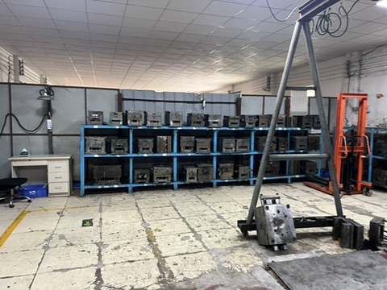

Taotao business-visit photo for context. It is not the buyer's mold, proof of ownership, or evidence about a specific supplier.
You are buying a custom door-closer housing, window component or another OEM part. The supplier's quote has a separate mold charge. Before paying it, can you tell what you will control after the sample is approved—or if production moves elsewhere?
The purchase decision is not just the tooling price. Separate the physical tool from the drawings, design files and permission to use them. A photograph of molds on a rack answers neither question.
Why the distinction matters
The World Intellectual Property Organization recommends defining pre-existing and newly created IP, supplier use, confidentiality, milestones and what happens to materials when the relationship ends. UK government business guidance also cautions that paying for work does not, by itself, automatically transfer rights in what is created. The legal result depends on the relevant jurisdiction and agreement; get qualified legal advice for your contract.
Our practical inference is that buyers need a separate written record for the physical mold: who paid for it, which legal entity owns it under the contract, where it is kept, who may use it, how it is maintained and how it can be released or transferred. IP rights and possession of a tool are related, but they are not the same question.
Ask for an evidence pack before the tooling payment
| Record | Match it to | Question it answers |
|---|---|---|
| Tooling schedule: tool ID, part and drawing revision, price, payment milestone, storage site and maintenance owner | Quotation, order and named manufacturing entity | What exactly is being funded and where will it be held? |
| Written ownership, permitted-use and release/transfer terms | The same tool ID and both legal entities | Can the supplier use the tool for other customers? What happens if the relationship ends? |
| Design/IP terms for existing files, new work and later changes | Approved drawing and file versions | Who may use or transfer the design—not just the physical mold? |
| Sample and acceptance record | Tool ID, drawing revision and agreed acceptance criteria | What evidence releases the balance and starts production? |
For a door closer, the sample record might identify the housing geometry and finish. For a window component, it might identify the profile drawing and assembly interface. These are planning examples, not claims about a Taotao supplier's actual tool or contractual terms.
How to verify, and what a photo cannot prove
- Have the contracting entities sign a schedule that uses the same tool and drawing identifiers as the quote, purchase order and sample approval.
- Ask for a dated tool photo or visit record showing its identifier and storage location, then compare it with the schedule. Do not infer legal title from its presence in a workshop.
- Confirm who holds editable design files, who can approve revisions and how a transfer would work in practice. Ask counsel to review the rights language where the investment matters.
Pause if the quote says only “mold fee” without an identified tool or release terms. Escalate if the seller, tool holder and invoicing entity differ with no documented relationship; that may have an innocent explanation, but it must be made explicit. A photo, payment receipt or sample alone cannot settle ownership.
Continue, pause or escalate
- Continue: the tool, design, payment milestones, permitted use and exit process are written, entity-matched and understood.
- Pause: a term is missing but can be resolved before payment; request the revised schedule and approval record.
- Escalate: rights or custody conflict, or the supplier will not document how the tool and files can be used or returned. Seek independent legal and technical review before committing.
My corporate-banking background informs this document-to-operation check using authorized records and observable facts. It does not give Taotao access to non-public bank information or constitute a financial or legal opinion.
Primary sources: WIPO supplier IP agreement guidance; UK government guidance on IP with suppliers.